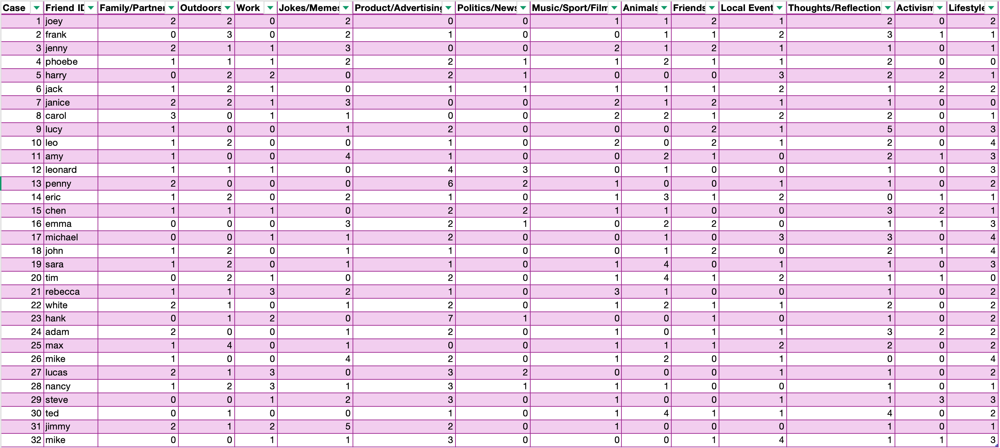
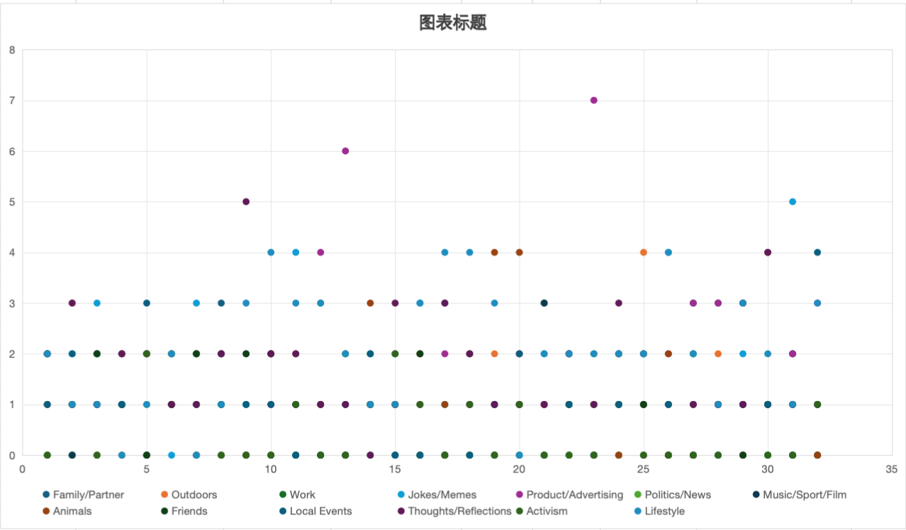

Week 7: Reflective Pause
This week’s workshop centred on Sumpter’s social‑media experiment. Inspired by Cheney‑Lippold and Safiya Noble’s theory of algorithmic identity, our group recognised that manual coding and consumer‑driven profiling create biased digital representations. The optional interview task reinforced how research medium shapes data, alongside ethical requirements for anonymised notes and no audio‑recording.
I also noted the course AI policy: AI may only be used for proofreading and translation and must be acknowledged. Like platform algorithms and human coding, AI contains inherent bias. Therefore, I will maintain original authorship and critically evaluate digital tools when preparing my essay and portfolio evidence.

Figure 4: Manual social‑media coding table

Figure 5: Scatter‑plot visualisation of coded social‑media data